If you've watched any sci-fi movie with space in it, you've probably seen this scene. The spaceship flies towards a black hole, everything starts shaking, the colours go crazy, and then, boom, the crew pops out in a totally different part of the universe. Or in a different universe altogether. The black hole was a door the whole time.
It's a really fun idea. And honestly, it isn't completely made up. In 1935, Albert Einstein and his young assistant Nathan Rosen were playing with the equations of gravity, and they found something strange: a shape in the maths where one region of space is joined to another region of space by a kind of narrow neck. They called it a "bridge." Today we call it an Einstein–Rosen bridge, and its more famous nickname is a wormhole.
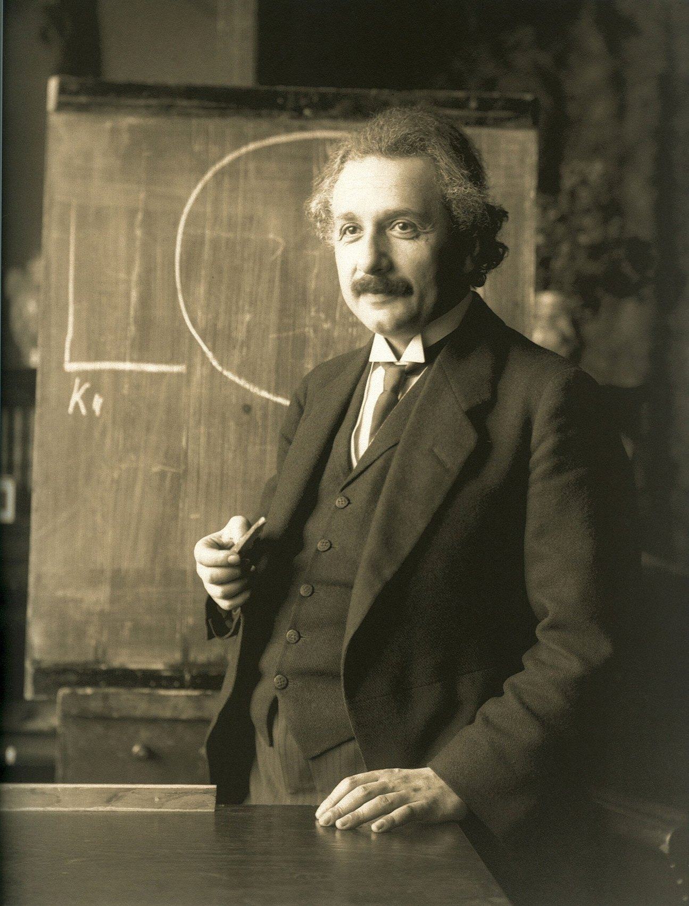
So the question in the title is a real question that real physicists have thought about very carefully. Does a black hole lead to another universe? Is there a tunnel at the bottom? And if there is, can anything go through it?
I'll spoil the short answer right now, because the interesting part is the why: the bridge exists in the maths, but it can't be crossed. It snaps shut faster than anything, even light, can get through. And the "another universe" part turns out to be a bit of a misunderstanding too. But to really see why, we need to understand what gravity actually is, what a black hole actually is, and what Einstein and Rosen actually found. Let's go step by step.
Chapters 2–3: what gravity and black holes really are. Chapters 4–6: the 1935 bridge, the "two universes", and why you can't get through. Chapters 7–8: wormholes you could cross in theory, and why they might be time machines. Chapters 9–12: what telescopes actually see, a link to quantum entanglement, the most common myths, and the final answer.
In school, we learn Newton's version of gravity: every object pulls on every other object with a force. The Earth pulls the Moon, the Sun pulls the Earth. It works amazingly well, well enough to land people on the Moon. But Newton himself never explained how the Sun "reaches out" across 150 million kilometres of empty space to pull on us.
In 1915, Einstein gave a totally different answer with his theory of general relativity. He said gravity isn't really a force at all. Instead, mass and energy bend space and time (physicists glue them together and call it spacetime), and objects just move along the straightest possible path through that bent spacetime. Those "straightest paths" are called geodesics.
The famous way to picture it is a trampoline. Put a bowling ball in the middle and the sheet sags. Now roll a marble past it: the marble curves around the dip, not because the bowling ball is "pulling" it, but because the surface it's rolling on is bent. That's basically what the Earth is doing around the Sun.
The maths version is Einstein's field equation. It looks scary, but in words it says something really simple:
The trampoline (and every "funnel" picture in this essay) is an analogy, called an embedding diagram. Real space isn't a rubber sheet sitting inside some bigger space, and there's no actual "down" for it to sag into. We draw a slice of space as a curved surface just so our 3D brains can see the curvature. Keep that in mind, because it's exactly where the "another universe" confusion comes from.
Only a few weeks after Einstein published general relativity, a German astronomer named Karl Schwarzschild found the first exact solution of his equations. And he did it while serving as a soldier on the Russian front in World War I. He worked out what spacetime looks like around a perfectly round, non-spinning, uncharged ball of mass, and mailed it to Einstein, who was surprised anyone had solved it so fast.
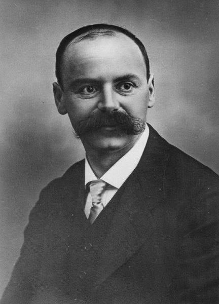
Hidden inside Schwarzschild's solution is a special distance, now called the Schwarzschild radius. If you squeeze a mass into a ball smaller than this radius, gravity wins completely. Nothing can climb back out, not rockets, not light, nothing. The edge of that region is the event horizon, and the thing inside it is a black hole.
Let's put in some numbers, because they're kind of shocking:
One important thing: the event horizon is not a wall. There's nothing solid there. If you fell through it you wouldn't feel a bump. In Schwarzschild's original coordinates the maths seems to "blow up" at rs, but that turned out to be just a bad choice of map, like how a world map makes Greenland look huge. Physicists call it a coordinate singularity. With a better map, someone falling in crosses the horizon smoothly, in a perfectly normal, finite amount of their own time.
The real trouble is at the very centre, r = 0. There, the curvature of spacetime really does go to infinity. That's the singularity, and it's where general relativity itself breaks down and stops making predictions. Most physicists think a future theory of quantum gravity will replace it with something else, but nobody knows what yet.
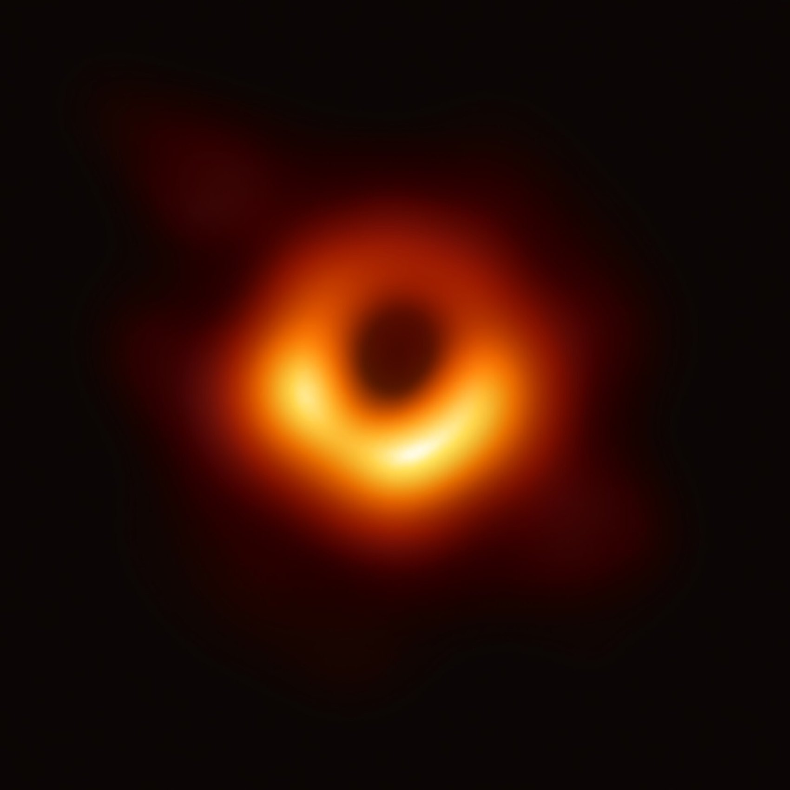
Here's the funny part. When Einstein and Rosen wrote their 1935 paper, The Particle Problem in the General Theory of Relativity, they weren't thinking about space travel at all. They weren't even really thinking about black holes. Back then, nobody was sure black holes were real, and the word "black hole" wouldn't be popular for another thirty years.
Their actual goal was to describe particles, like electrons, without singularities. Physicists hate singularities, points where a theory says something is infinitely dense or infinitely curved, because that's the theory basically saying "I give up." So Einstein and Rosen took Schwarzschild's solution and rewrote it in a clever way. And when they did, something surprising appeared: instead of space just ending at the middle, there were two identical copies of the outside space, joined together at a narrowest point. They called that joint a bridge, and hoped particles might be little bridges like this.
The particle idea didn't work out. But the bridge stayed in the maths, and people kept coming back to it. It only became really clear what it was in 1960, when two mathematicians, Martin Kruskal and George Szekeres, separately found a new set of coordinates that showed the whole Schwarzschild solution at once, horizon and all, with no fake blow-ups. Their map revealed the full shape, and it was stranger than anyone expected.
When you extend Schwarzschild's solution as far as the maths allows (physicists call this the maximally extended solution), you get four regions, not one. The easiest way to see them is with a special kind of map called a Penrose diagram. It squishes all of infinite space and time into a finite shape, and it has one golden rule: light always travels at 45°. So anything slower than light, like you or me, always moves more upward than sideways.
So region I and region II are the two "sheets" from the bridge picture. This is where the phrase "two universes" comes from. But that phrase can really mislead you. Regions I and II aren't two different universes with different physics or a different Big Bang. They're just two far-away, flat outside regions of one single, very idealised spacetime. Physicists call them asymptotically flat regions, which just means that far from the black hole, space goes back to being normal and flat.
Now look at the diagram again and try to draw a path from region I to region II without ever going sideways faster than 45°. You can't. Every path that leaves region I to the right ends up in the black hole region, and hits the top singularity. That one picture is basically the whole answer to the question in the title, but let's not rush, we'll look at it carefully in the next chapter.
This four-region shape belongs to an eternal black hole: one that has existed forever, never changes, and has nothing falling into it. That's a perfect mathematical object, not a real one. Real black holes form when a big star collapses. When you work out the maths for a collapsing star, the star's own matter covers up region II and the white hole completely. They're simply not there. So a real black hole made from a star doesn't even have a second "side" to go to.
That's a really important point that sci-fi always skips. The bridge isn't something hiding inside the black holes we photograph. It's a feature of a perfect, idealised solution that nature almost certainly never builds.
Okay, but let's say we ignore that problem and imagine a perfect eternal black hole really exists. Could you go through its bridge then? Still no. And the reason is the most important idea in this essay: the bridge doesn't stay open.
Fig. 4 was a snapshot, like a single frame from a movie. If you play the movie, the throat grows from nothing, opens to its widest for a moment, and then pinches shut again, and all of this happens so fast that a beam of light can't get from one side to the other before it closes. In 1962, John Wheeler and Robert Fuller worked this out in detail. It's a bit like trying to run through a gap between two closing elevator doors, except the doors close faster than light can travel.
To see it properly, physicists use light cones. Imagine a flash of light going off at some point. In a spacetime picture, the light spreads out as a cone into the future. Everything you could ever possibly reach, travelling slower than light, is inside that cone. Everything outside it is off-limits to you, forever. Your future is always inside your light cone.
Near a black hole, gravity tilts the light cones inward. And once you're past the horizon, something really weird happens: the centre of the black hole, r = 0, is no longer a place in front of you, it's a time in your future. Moving towards it is as unavoidable as moving towards tomorrow. You can't steer around it and climb out the other side into region II, because "the other side" is outside your light cone. Getting there would mean going faster than light.
From region I, you cross the horizon without noticing anything special. If the black hole is small, tidal forces stretch you long and thin first (physicists honestly call this spaghettification). Either way, you hit the singularity in a finite time, for a Sun-mass black hole in about 10 microseconds after crossing, and for M87* in about a day. Someone falling in from region II could meet you inside the black hole, but neither of you could ever get out to tell anyone.
And there's one more problem. Real black holes are messy: gas, light and dust are always falling in, and they spin. Physicists have checked whether any of this "disturbance" could help prop the bridge open. It doesn't. It only makes the perfect eternal solution an even worse description of real black holes. So, put simply: an event horizon is a one-way door, not a doorway to somewhere else.
So, the 1935 bridge is a dead end. But physicists didn't stop there. In the 1980s, the astronomer Carl Sagan was writing his novel Contact and wanted his hero to travel through a wormhole without it being total nonsense. He asked his friend Kip Thorne, an expert on black holes, for help. Thorne and his student Michael Morris flipped the question around: instead of asking "what does a black hole do?", they asked "what shape would a wormhole need to be so that people can actually travel through it, and what would it take to build that shape?"
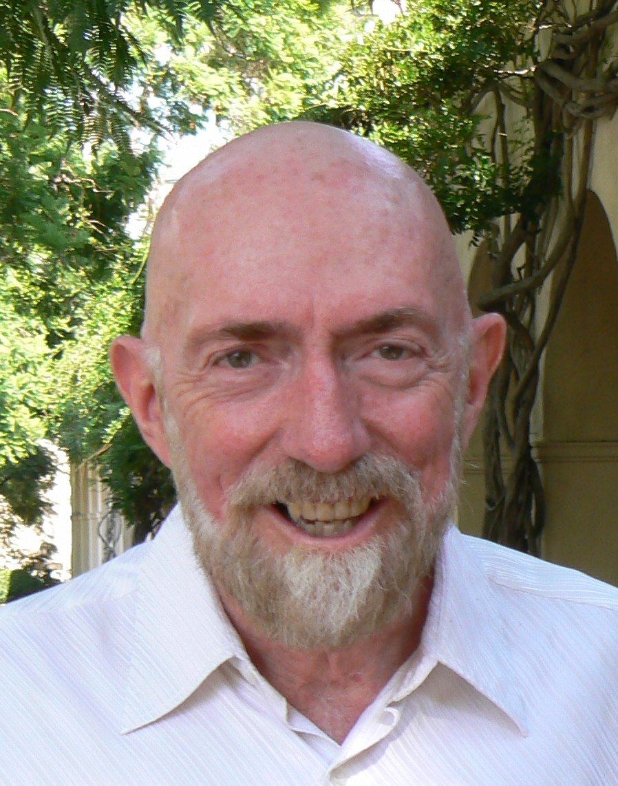
Their answer, published in 1988, is called a traversable wormhole. It's a totally different thing from the Einstein–Rosen bridge. It needs to have no event horizon (otherwise it's a one-way trip again), and its throat has to stay open instead of pinching off. For the maths fans, one way to write it is:
Here's the problem. Normal matter and energy, the stuff stars, planets and people are made of, always have gravity that pulls light rays together, like a magnifying glass focusing sunlight. A wormhole throat needs the exact opposite. Light going into one mouth gets squeezed into the throat and then has to spread out again on the other side. To spread light apart like that, the throat needs stuff whose gravity pushes light rays apart, like a diverging lens.
Physicists turn this into a rule called the null energy condition (NEC). Written as Tμνkμkν ≥ 0, it basically says "measured along a light ray, the energy is never negative." Every normal kind of matter obeys it. A traversable wormhole must break it near the throat. That's why every popular article says wormholes need "exotic matter". And "exotic" here doesn't mean some weird chemical, it means stuff with negative energy, which is extremely unusual.
Negative energy sounds impossible, but quantum physics actually allows tiny amounts of it. The most famous example is the Casimir effect, predicted by the Dutch physicist Hendrik Casimir in 1948 and measured properly in 1997.
In quantum physics, empty space isn't truly empty. It's full of tiny fluctuations, little ripples of the electromagnetic field popping in and out all the time, of every possible wavelength. Now put two metal plates very, very close together, a few hundred nanometres apart. Between the plates, only the ripples that fit neatly in the gap are allowed. Outside, every ripple is allowed. So there's less going on between the plates than in "empty" space outside, and the energy between them counts as negative compared to normal empty space. The plates even get pushed together by it.
So negative energy is real. Does that mean we can build a wormhole? Sadly, no, or at least not anywhere close. Physicists like Larry Ford and Thomas Roman proved rules called quantum inequalities, which limit how much negative energy you can have, how long it can last, and how it can be arranged. The more negative energy you want, the shorter the time and the smaller the space it's allowed in. In 1996 they showed that if you tried to hold open a wormhole of any useful size, the negative energy would have to be squeezed into a band far, far thinner than the throat, which is a really awkward, probably impossible, design.
Negative energy exists in tiny, controlled amounts in the lab. Nobody has any idea how to collect enough of it, in the right shape, for long enough, to hold a big stable wormhole open. Whether quantum gravity allows it at all is an open research question. There's no recipe, only limits.
I find this part really cool, honestly. The question "can we build a wormhole?" sounds like pure fantasy, but trying to answer it seriously taught physicists real things about the rules of energy in quantum physics. Sometimes the best way to learn the laws is to try really hard to break them.
Here's where it gets even wilder. In 1988, Morris, Thorne and Ulvi Yurtsever showed that if you had a traversable wormhole, you could probably turn it into a time machine. And the trick only uses something that's already been proven by experiment many times: time dilation, the fact that moving clocks tick slower.
Imagine you have a wormhole with two mouths, A and B, both on Earth, and the tunnel between them is very short. Leave mouth A at home. Put mouth B on a rocket and fly it away at 99% of the speed of light, then bring it back. Because of time dilation, the clock next to mouth B ticks much slower during the trip. Let's say 10 years pass on Earth, but only about 1.4 years pass for mouth B.
Now here's the key part: through the tunnel, the two mouths still agree with each other on time, because inside the wormhole they're right next to each other and nothing moved. So after the trip, it's the year 2036 outside mouth A, but if you step into mouth B (which only aged 1.4 years since 2026, so it's "2027" for it) you come out of A in the year 2027. You've gone nine years into the past. And if you then fly back to B the normal way and do it again, you get a loop in time, which physicists call a closed timelike curve.
That's obviously a huge problem. If you can go back in time, you get all the classic paradoxes, like going back and stopping yourself from ever building the wormhole in the first place. But notice how many big "ifs" this needs: a stable traversable wormhole, a way to move its mouths, a rocket going at nearly light speed, and quantum effects that don't wreck everything. None of these exist. And the original Einstein–Rosen bridge can't do any of this at all, because you can't cross it.
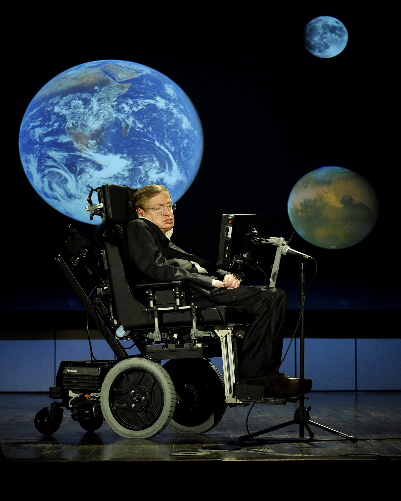
Hawking's idea is called the chronology protection conjecture. The rough reasoning is that just as a time machine is about to form, light and quantum fluctuations could go round and round the loop again and again, piling up until the energy becomes enormous and destroys the wormhole. Calculations often do show that energy blowing up. But "conjecture" means it's a very educated guess, not a proof. To really settle it, we need a full theory of quantum gravity, which nobody has yet.
So far this has all been maths and thought experiments. What does the actual sky tell us? The honest answer: there is no confirmed observation of an Einstein–Rosen bridge or any wormhole. But we've gotten really good at looking at black holes, and everything we've seen matches general relativity's ordinary black holes very well.
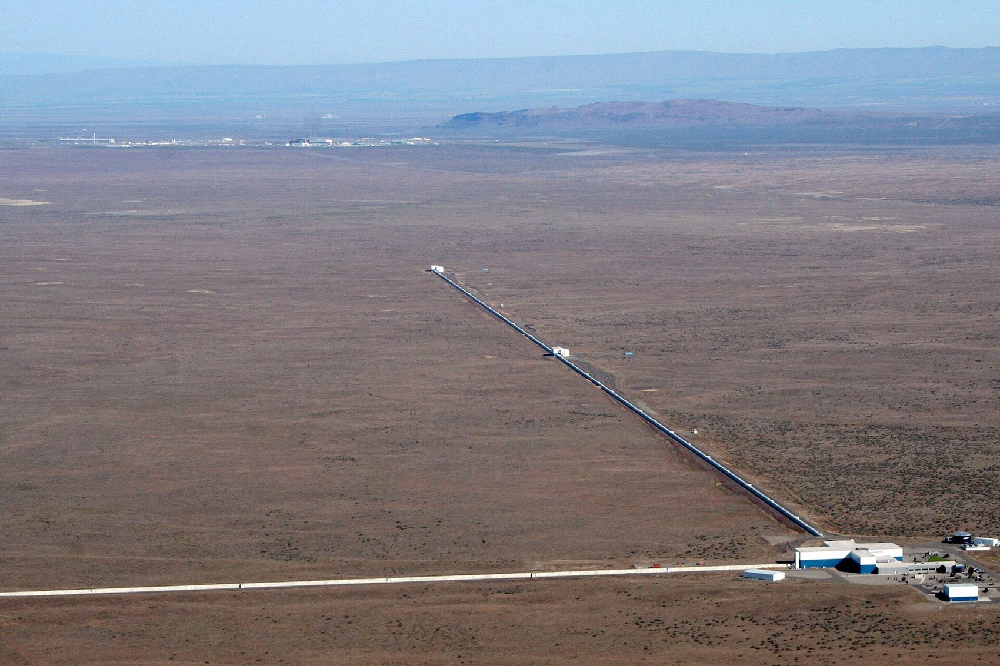
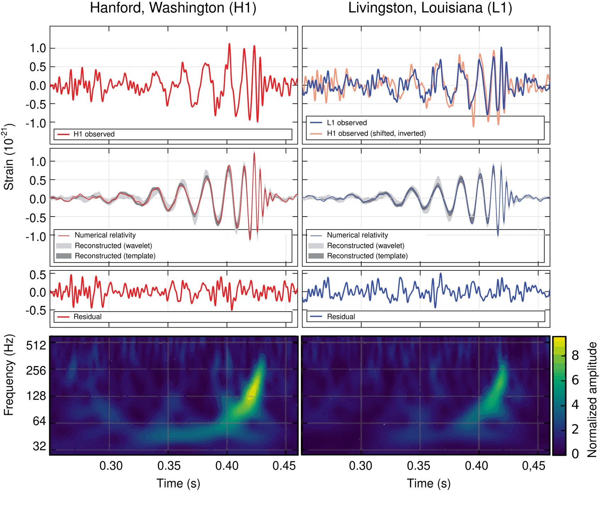
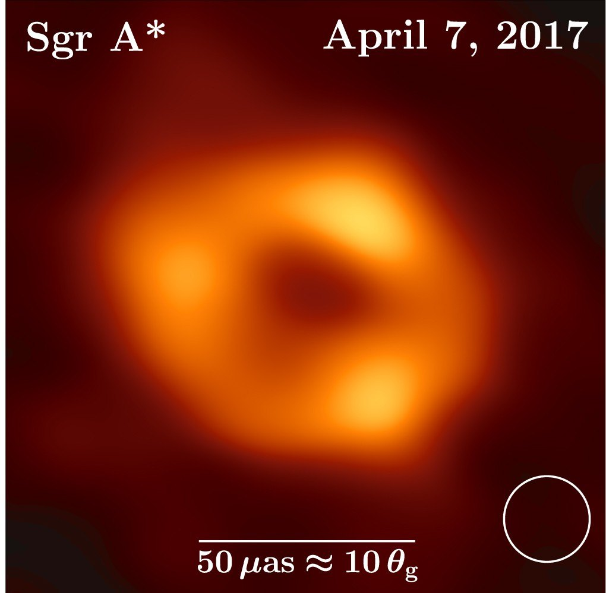
Could we tell a wormhole apart from a black hole if we saw one? Scientists have suggested a few ways. A wormhole mouth might bend background light in an unusual pattern, gas swirling around it might glow differently, its "shadow" might look a bit different, and when two of them merge, the gravitational waves afterwards might have extra echoes. The problem is that most of these signals depend heavily on the exact model, and normal astrophysics, like messy gas or other strange compact objects, can produce similar effects. Some people have claimed hints of echoes, but none of them has held up as real evidence.
| Method | What it looks at | What it says so far |
|---|---|---|
| Black hole photos (EHT) | How light bends right next to the hole | Looks like a normal black hole. Not proof of a bridge. |
| Gravitational waves | The "ringing" after two holes merge | Matches ordinary black hole mergers, as far as we can measure. |
| Gravitational lensing | How mass bends light from behind | Could rule out some exotic shapes, but no wormhole found. |
| Orbits of stars | Gravity around very dense objects | Tests relativity really well, but doesn't test for tunnels. |
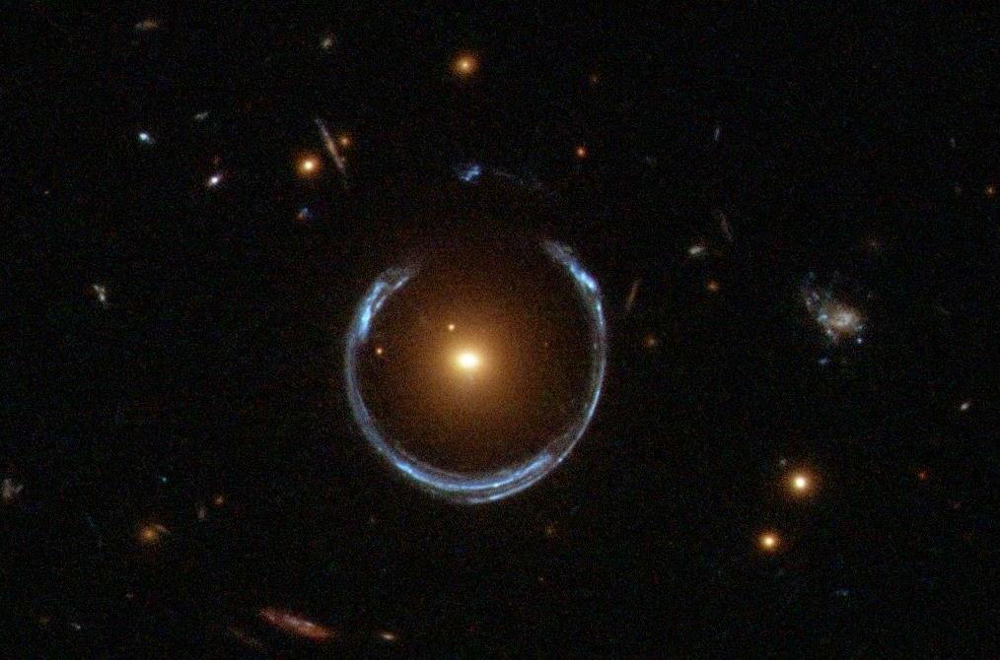
Here's a coincidence I love. In 1935, Einstein and Rosen wrote two famous papers. One was the bridge paper, which we've been talking about, nicknamed ER. The other, written with Boris Podolsky, was the EPR paper about quantum entanglement, the "spooky action at a distance" where two particles stay linked no matter how far apart they are. (I wrote a whole essay about that one, Spooky Action at a Distance, also in this archive.) For almost 80 years, everyone thought these two papers had nothing to do with each other.
Then in 2013, the physicists Juan Maldacena and Leonard Susskind suggested something bold: maybe they're the same thing. Their idea, written as the short slogan ER = EPR, says that two entangled black holes are connected by an Einstein–Rosen bridge, and, going further, that maybe every bit of entanglement is connected by some kind of tiny, quantum version of a bridge.
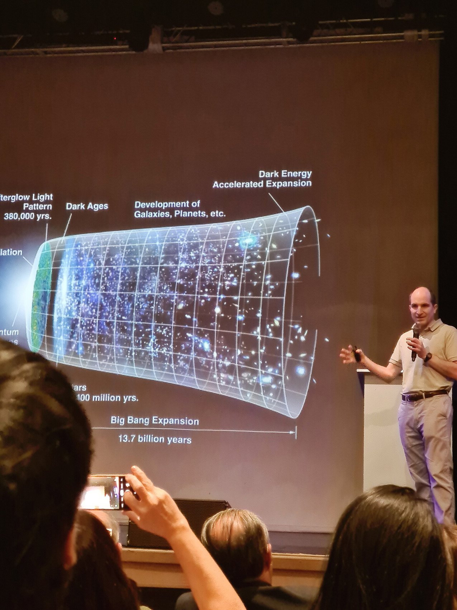
It's a really exciting idea, and it's very influential in research on quantum gravity. Some scientists even think space itself might be "stitched together" by entanglement. But I need to be careful here, because this is where pop science often goes wrong:
It's a conjecture, not a proven fact. The bridges it talks about are the non-traversable kind, so you can't send anything through them. It does not mean entangled particles are little tunnels you can use. And entanglement can never send a message faster than light, a rule called the no-communication theorem. Both pictures agree on that: no shortcut, just a connection.
Actually, that's what makes the idea so pretty. The bridge you can't cross and the entanglement you can't use to send messages have the exact same "personality". Both are connections that don't let you cheat the speed of light. Maybe that's not a coincidence.
We've covered a lot, so here's a quick cheat sheet. If you ever see a video or article saying one of these, now you know what's really going on.
| The myth | What physics actually says |
|---|---|
| "A wormhole is just a black hole with an exit." | No. A black hole made by a collapsing star isn't known to have any exit at all. The star's own matter covers up the "other side". |
| "Einstein's 1935 bridge lets you travel between universes." | No. It pinches shut faster than light can cross it. And the "two universes" are two regions of one idealised spacetime. |
| "Negative energy makes a wormhole easy to build." | The negative energy we know about (like the Casimir effect) is tiny, and quantum inequalities strictly limit it. |
| "The funnel diagram proves you can travel through." | That picture is one frozen moment of space. To know if travel is possible, you have to look at light cones and all of spacetime. |
| "Entanglement sends information through a wormhole." | Entanglement creates correlations, but it can never send a message faster than light. |
| "Wormholes have been discovered." | No observation has ever been accepted as evidence for a wormhole. |
Short answer: no, not as far as we know. But the long answer is much more interesting than a plain "no".
Einstein and Rosen really did find a bridge in the equations of gravity, a neck joining two regions of space. That part is real maths. But the bridge belongs to a perfect, eternal black hole that has existed forever, which nature doesn't make. Real black holes come from collapsing stars, and in them the "other side" isn't even there. And even in the perfect version, the bridge snaps shut so fast that nothing, not even light, can get from one side to the other. Anything that falls in ends up at the singularity. A black hole is a one-way door with nothing behind it but the singularity.
Wormholes that you could actually travel through are a different idea, and general relativity doesn't forbid them outright. But they'd need large amounts of negative-energy "exotic matter", and quantum physics only allows tiny bits of it. If they did exist, they might even be time machines, which is a big hint that something in nature might stop them. And so far, every black hole we've photographed or heard colliding looks exactly like an ordinary one.
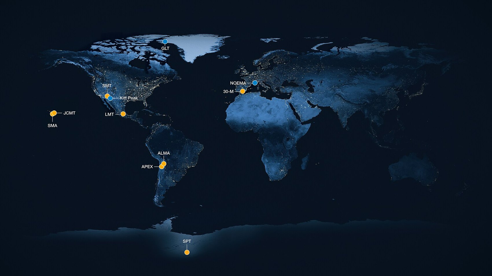
But here's why I still think the Einstein–Rosen bridge is one of the coolest ideas in physics. It shows the edges of what we know. Asking "can I go through it?" forced physicists to think really carefully about light cones, about negative energy, about time travel, and even about how quantum entanglement and the shape of space might be the same thing. The tunnel doesn't lead to another universe, but it led to a lot of new physics. Not bad for a mistake about particles in 1935.